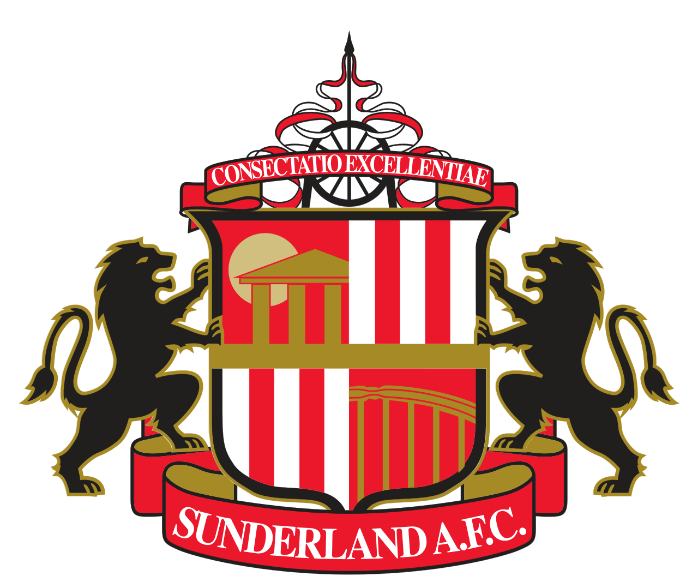
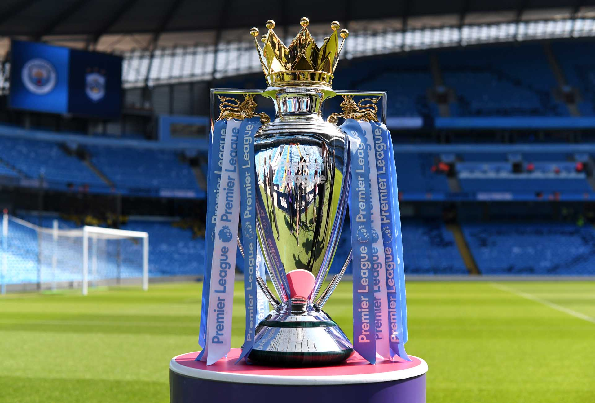
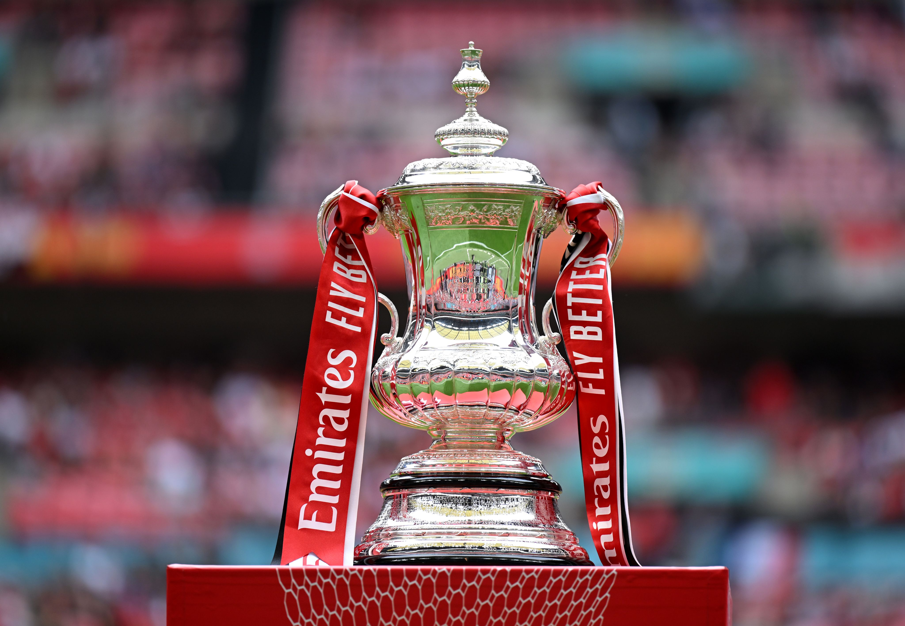
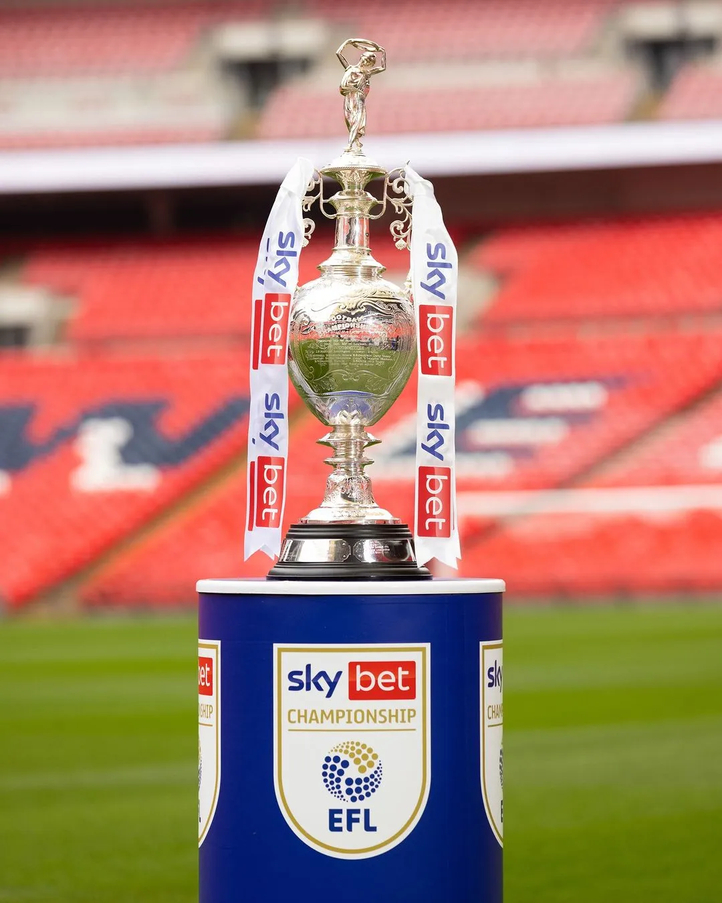
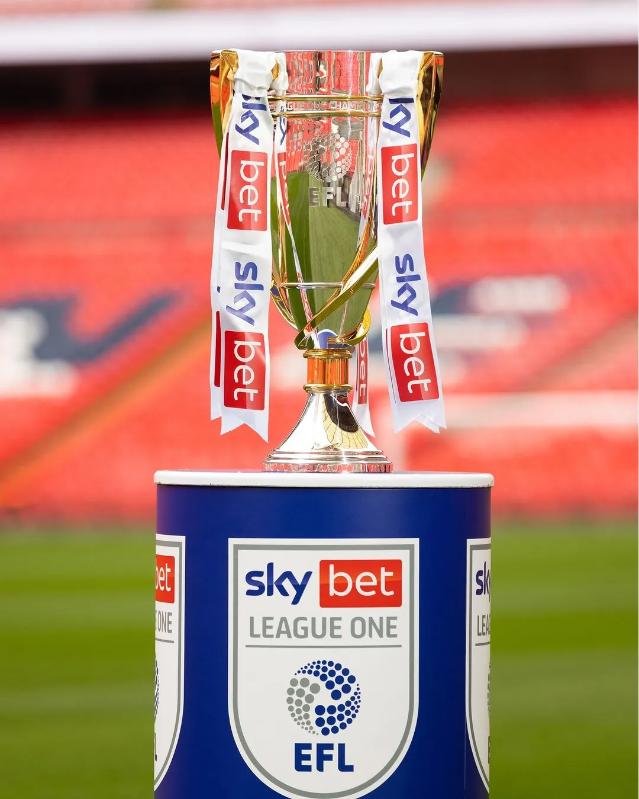
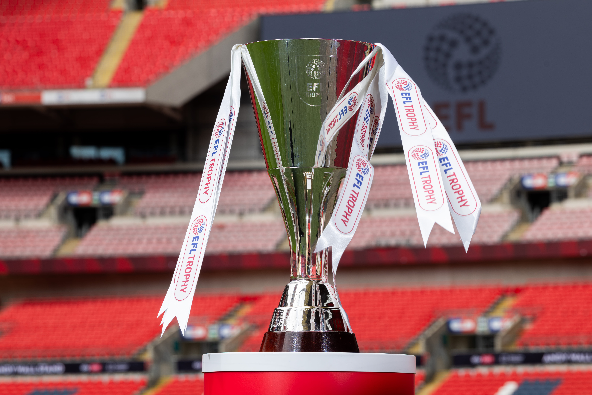
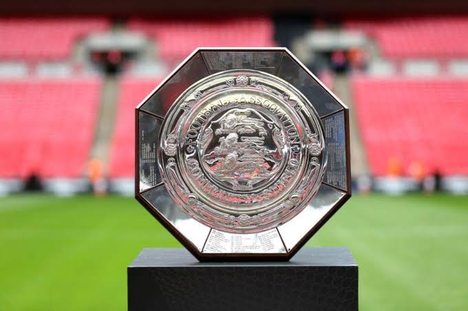

Zrození Sunderlandu
James Allan zakládá fotbalový klub, který se postupně stane jedním z tradičních anglických týmů.

SUNDERLAND AFC • OD ROKU 1879
Šest ligových titulů, dva triumfy v FA Cupu a nespočet nezapomenutelných okamžiků. Sunderland AFC má za sebou historii plnou úspěchů, zklamání i velkých návratů.
Sunderland AFC vznikl v roce 1879 ve stejnojmenném městě na severovýchodě Anglie. Jeho zakladatelem byl učitel James Allan. Původní název klubu zněl Sunderland and District Teachers Association Football Club.
V roce 1890 se Sunderland připojil k anglické Football League. Už o dva roky později získal svůj první ligový titul. Tím odstartovalo jedno z nejúspěšnějších období v historii klubu.
Od prvního mistrovského titulu až po návrat do Premier League. Tohle jsou roky, které fanoušci Sunderlandu dobře znají.
James Allan zakládá fotbalový klub, který se postupně stane jedním z tradičních anglických týmů.
Sunderland poprvé vyhrává anglickou nejvyšší soutěž.
Klub potvrzuje svou sílu a přidává další dva ligové triumfy.
Sunderland získává další dva mistrovské tituly. V roce 1913 se navíc dostává do finále FA Cupu.
Sunderland naposledy v historii vyhrává anglickou nejvyšší soutěž.
Ve finále poráží Preston North End 3:1 a získává svou první trofej FA Cupu.
Jako druholigový tým Sunderland překvapuje favorita Leeds United a vítězí ve finále FA Cupu 1:0.
Po sestupu do třetí ligy se Sunderland dokáže hned v následující sezoně vrátit zpět.
Po téměř sto letech opouští Roker Park a stěhuje se na nový Stadium of Light.
Klub sestupuje z Premier League a následně i z Championship do třetí ligy.
Sunderland vítězí v play-off League One a postupuje do druhé nejvyšší soutěže.
Vítězství nad Sheffield United ve finále play-off Championship znamená návrat do Premier League.
1898–1997
Legendární stadion, který byl domovem Sunderlandu téměř sto let. Právě zde klub odehrál velkou část svých historických zápasů.
Od roku 1997
Nový domov Sunderlandu s kapacitou přes 48 000 diváků. Stadion se stal symbolem nové kapitoly klubové historie.
Sunderland během své historie získal řadu významných trofejí. Tady je přehled jeho největších úspěchů.

6×1892, 1893, 1895, 1902, 1913, 1936

2×1937, 1973

5×1976, 1996, 1999, 2005, 2007

1×1988

1×2021

1×1936
Sunderland si prošel vším, co fotbal dokáže nabídnout. Oslavoval mistrovské tituly, zažil slavná finále, ale také sestupy a těžké návraty. Jedno se ale nezměnilo – podpora fanoušků, kteří za klubem stojí v dobrém i zlém.